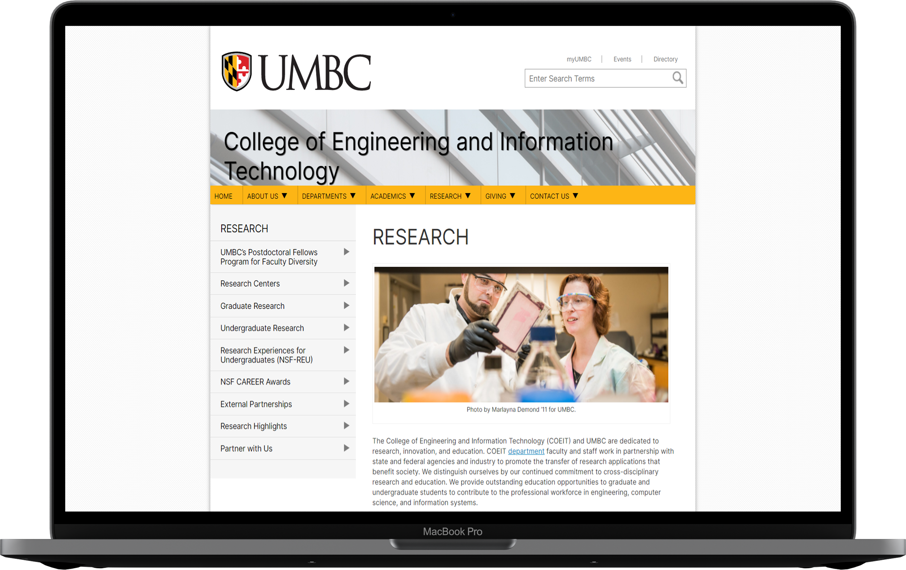

College of Engineering and Information Technology's Research Website
What's this about?
The client, the College of Engineering and Information technology (COEIT) of the University of Maryland, Baltimore County, highlighted some problems in their research website. The website serves as an information hub the various dimensions, ranging from the departments, faculty to the myriad of projects. The COEIT prides itself on the excellent research that is conducted in the labs of the various departments . (For example, the Interactive Systems Research Center (ISRC)), fostering a collaborative environment.
My Role
User researcher in a two member team responsible for conducting qualitative studies and help improve the usability of the existing product by providing recommendations.
Initial Usability Concerns
Outcome
We provided recommendations to increase efficiency of search, decrease the time taken to find information within the website and improve the time spent by the users on the website.
Goals
Employ the Design thinking process and user research to provide recommendations to improve the current website of the COEIT research division.
Challenges
- Short duration of the project meant getting all the research done and insights generation had to be quicker.
- Difficulty in recruitment given the timelines.
- Whether the developer of the COEIT research team would be willing the recommendations.
- Recruiter Bias.
I think this button is a little weird, it’s on like every page Did you find what you were looking for today? It looks like a button but it is actually a link in a box. That's kinda weird. I don’t want to go there, it scares me. - Participant
UX Research - The road to recommendations
The user research took place over a period of 16 weeks, with the competitive analysis done initially followed by a series of contextual inquiries, and 1-1 context interviews.
As this was an inhouse project, heuristic evaluation was done by the researchers themselves, taking the role of the "Experts". Heuristic Evaluations were done post the interviews because we wanted to focus on one task at a time. Once we had enough data, we proceeded to create personas that encapsulate our target audience .
Even though the client had given us the initial usability concerns, we proceeded to gain inputs from the users themselves to get a hold on the real problems faced in the website.
CONTEXTUAL INQUIRY
Participants were recruited and observed in their natural element. Contextual inquiries were conducted because we wanted to about the website experience in general by letting users talk about what they are doing and why when they are doing it - Employing a think aloud protocol.
Participants Observed
Demographic: Researchers (Faculty and Students) , Non-researchers (Faculty and Students) whose age ranged from 18-70
Gender: Any
Ethnicity: Any
Device Mobile (Android and IOS), Laptop, Desktops, IPad and other android tablets. .
#1. Lot of impressive content
#2. Some elements caused confusion
#3. Position of Images to draw attention.
#4. Information Overload.
COMPETITIVE ANALYSIS
We wanted to know what the other research websites offer. So we diverged and came up with pointers for each of them. Exploring other websites gave us the strengths and weaknesses of our client's website as opposed to others. Information was populated and insights were drawn to aid the future research for the current website.

USER INTERVIEWS
Participants were asked to participate in a full interview that was semi-structured. Specific inputs from the participants enabled us to strengthen the findings and combine the insights obtained from the contextual inquiries.
Participants Interviewed
Demographic: Researchers (Faculty and Students) , Non-researchers (Faculty and Students) whose age ranged from 18-70
Gender: Any
Ethnicity: Any
Device Mobile (Android and IOS), Laptop, Desktops, IPad and other android tablets. .
#1. Redundant Content
#2. Aggravated at the lack of internal consistency
#3. Frustration due to lack of information
#4. Text should be more spaced out, more meaningful and brief.
HEURISTIC EVALUATION
Heuristic evaluations were conducted on the College of Engineering and Information Technology (COEIT) research section to determine the extent of its functionality and its effect on user experience.
#1. VISIBILITY OF SYSTEM STATUS
Some of the content in the website is outdated and people may not like it when they read outdated content.#5. LACK OF ERROR PREVENTION
The feedback form can be submitted without any information. Furthermore, there isn’t any message in place to confirm whether the user truly wishes to submit the form once the submit button is clicked.#6. RECOGNITION RATHER THAN RECALL
Images do not link to the information presented in the website. For example, the picture related to the undergraduate research is not actually related and looks like a train subway.PERSONA
Using the insights and painpoints generated from the research conducted, we created two personas to reflect the key characteristics of our participants, that aided us in developing an understanding of current users and potential users and create the redesigns accordingly.

Insights
My teammate and I gained deep insights from the research conducted, that included the participants ranging from faculty to researchers to students
- Content Information: Stressed on the lack of contact information for various resources and services listed on the website, which would otherwise promote collaboration.
- Nesting Info: Lack of nesting of information caused frustration.
- Consistency: Participants were aggravated by the lack of internal consistency within the website, regarding the navigational menu, and navigation within its sub pages.
- Users and Emotions: At a deeper level, other personality traits include an expressive behavior to do what they want and pursue research, and suppressing emotion when a search fails. Impatient users would cut a frustrated figure due to the loopholes in navigation, or blame the content curators for not giving them the appropriate results. Users also express themselves as independent individuals, exploring interesting areas of research.We found that users range from being inquisitive about the content presented by the website, to being oblivious about its content due to its outdated nature.
- Research: Additionally, current students appeared to be focused on the type of research they want to conduct while people looking for funding are hopeful of finding content on the website that can lead to finding it.
I like this graphic (Referring to the graphic on the homepage). Always catches my attention, graphics. But I really do not know what/why these images on the homepage even exist. - Participant
Recommendations
- Reduction in the content may decrease information overload.
- Eliminating the navigation loop enables smoother navigation.
- Text can be spaced out, brief and more meaningful
- Placing the 'Research Highlights' tab much further above in the navigation menu would serve the website’s purpose better.
- The positioning and the usages of images along with the text to draw attention is useful in the present state, and hence can stay as is.
- Reducing the nesting of information can reduce click rate and help users to stay on in the website.

Next Steps
We would like to point out that the recommendations suggested to the client would most certainly improve the user experience with the research website.
Takeaways
The COEIT research website is a text-heavy website with a lot of cross-page navigation, we wanted to focus on incremental development rather than changing the setup altogether. Additionally, this was an enjoyable experience as it involved a lot of user research and data synthesis. I got a teammate who helped me grow as the project wore on. In the future, we would like to see these recommedations being as we believe that it can attract a much bigger audience given our exhaustive and extensive work to refine the existing website